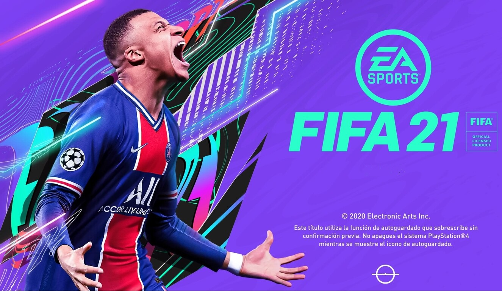

EA Sports continúa más de 20 años después su saga de simulador de fútbol con FIFA 21, un videojuego que cubrirá la temporada profesional del año 2020 a 2021 contando nuevamente con varios modos de juego, incluida la oportunidad de formar el equipo de tus sueños en FIFA Ultimate Team. A falta de conocer los primeros detalles de la producción, FIFA 21 será la primera entrega de la franquicia en llegar a la generación de PlayStation 5 y Xbox Series X, un salto generacional que a buen seguro se traducirá en mejoras visuales, buscando un detalle y realismo nunca antes visto.
Desarrollador:EA Sports Editor:EA Sports Género:Deportes, Fútbol Jugadores:1-22 (Competitivo: Local (4) / Online (22) / Cooperativo: Local (4) / Online (22)) Idioma:Textos en español y voces en español Lanzamiento:9 de octubre de 2020 (Pegi: +3) Multiplataforma